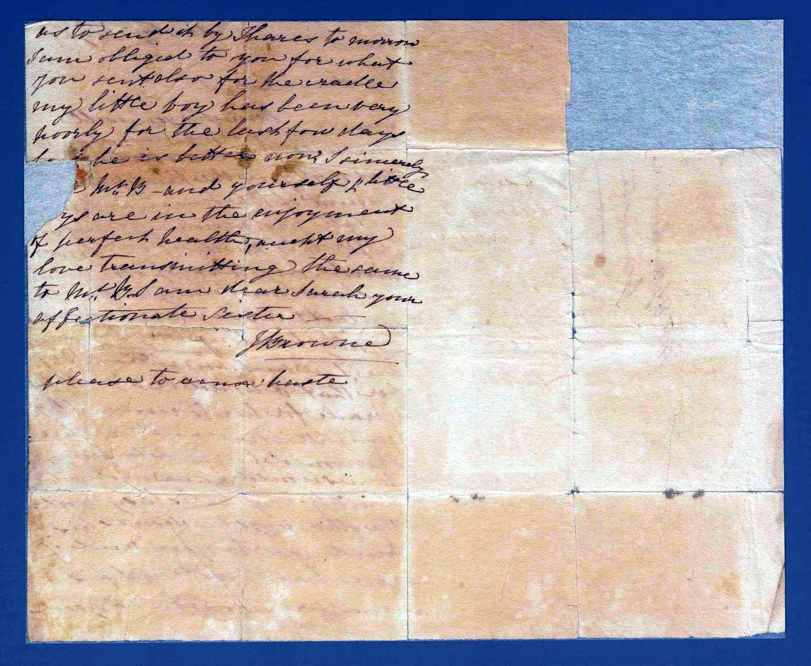

Friday Night
Sarah's sister Jane — now married to a Mr Browne — sends part of a pig, and dreadful news: a young woman named Caroline is dying, and cannot last long.
It is undated. The domestic and the mortal sit side by side, as they do in life.
She cannot possibly live long. Every time I see her, I see such an alteration in her that it would be almost a miracle for her to recover.
This Caroline is not Sarah's daughter.
The reading is given first as written, then in plain modern paragraphs. Dotted words are uncertain; square brackets mark readings to confirm.
First sheet
In plain reading
My dear Sister,
Herewith you will receive part of a pig, which I doubt not you will find excellent. James has sent you the head; on account of the brain, he thinks in all probability you would prefer it to the tail part.
I am sorry to say poor Caroline has been considerably worse for the last two or three days. She cannot possibly live long. Every time I see her, I see such an alteration in her that it would be almost a miracle for her to recover. I hope you will come and see her — she would be glad to see you. James would have written to you himself, only he is busy with the other pigs. He desires his kind love to you; and if you have not sent his comb, will you be so good —

Second sheet
In plain reading
— as to send it tomorrow. I am obliged to you for what you sent, also for the cradle. My little boy has been very poorly for the last few days, but he is better now. I sincerely hope Mr B. and yourself, and the little ones, are in the enjoyment of perfect health.
Accept my love, and transmitting the same to the others, I am, dear Sarah, your affectionate sister,
J. Browne. Please to excuse haste.
A note on this letter
Signed “J. Browne” — this is Sarah’s sister Jane, the same Jane whose broken engagement William reported in 1829; she later married a Mr Browne. The letter is undated beyond “Friday Night.”
The Caroline who is dying here is not Sarah’s daughter Caroline (who sailed as a child on the Lord Keane). The letter’s power is its ordinariness beside its grief: a gift of pig, a borrowed comb, a cradle sent for a new baby — and, in the same breath, a young woman who cannot last the week.
Image reproduced from State Library Victoria, PAC-10009902. Reproduction is subject to the Library's permission and conditions of use.